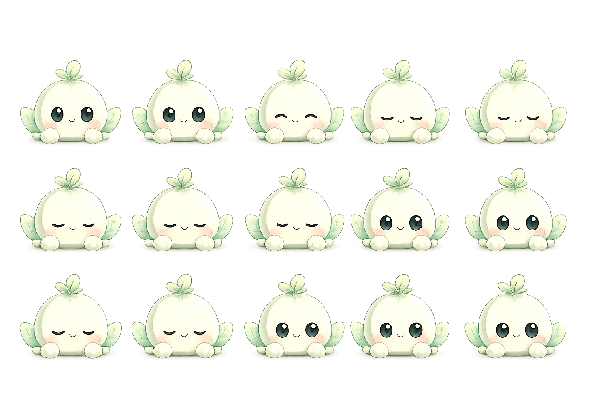

源图不是等分网格：四周留白与行距不相等，直接使用 background-size: 500% 300% 会切到相邻帧。此页按每张图的真实帧中心划分区域，再从每格透明像素中提取主体，统一居中到正方形 cell。
红线是按真实帧中心计算的分界；黄线是原先错误的等分 5×3。红线应落在角色之间的透明间隙内。

每帧从校准区域内独立取透明内容边界，并按最大帧尺寸居中；这里不应再出现邻帧残片、截脚或纵向错位。
除 thinling 为 5×2（10 帧）外，其余源图均为 5×3（15 帧）。动画使用校准后的正方形 cell，不拉伸原画比例。